Next: *DAMPING Up: Input deck format Previous: *CYCLIC SYMMETRY MODEL Contents
Keyword type: model definition, material
This option is used to define the properties of a damage initiation model. There is one required parameter CRITERION. Two criteria are available: RICE TRACEY and JOHNSON COOK, cf. Section 6.8.19.
First line:
Following line for CRITERION=RICE TRACEY:
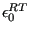
.Following lines for CRITERION=JOHNSON COOK:
First line of pair:
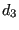
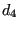
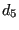
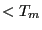
)Second line of pair:
Example: *DAMAGE INITIATION,CRITERION=JOHNSON COOK 1.,1.,-1.,0.,1.,1000.,500.,1.E-2, 0.045
defines a damage initiation model according to the Johnson-Cook model with
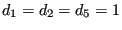 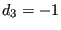 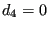 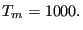 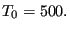 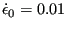 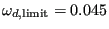
Example files: damage1, damage2.